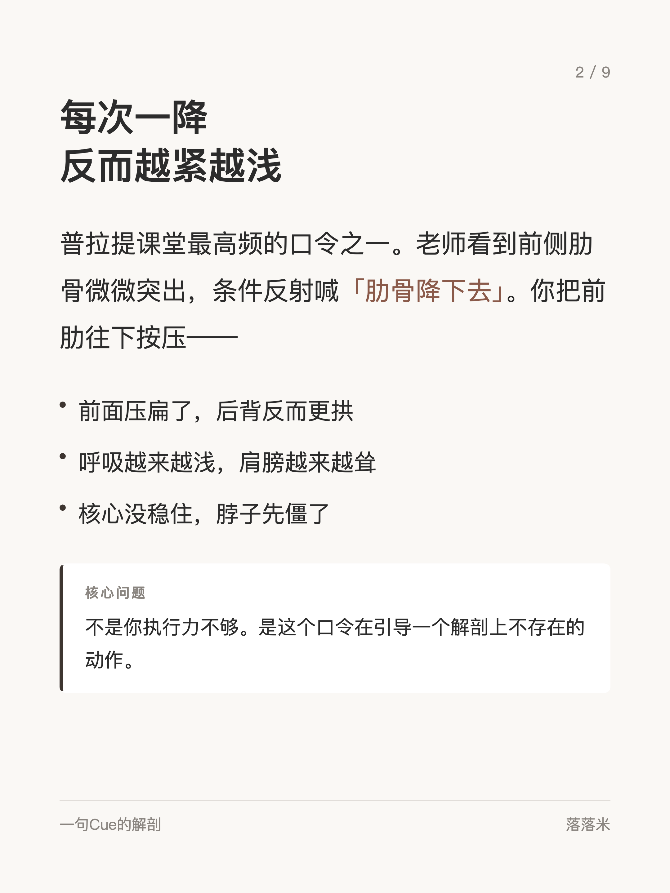
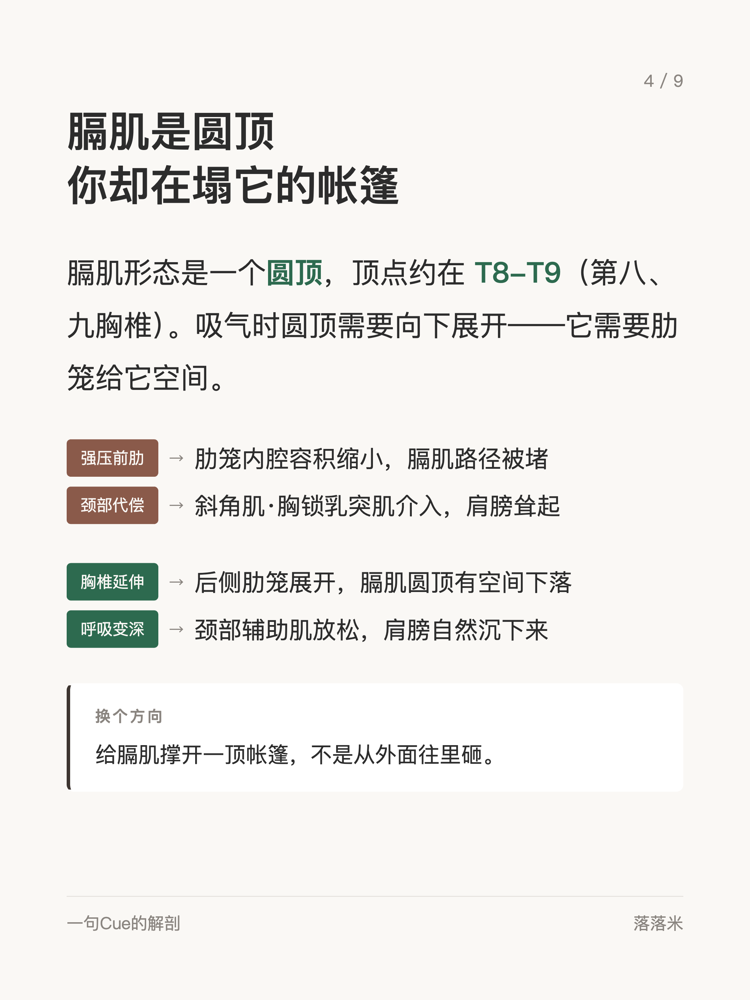
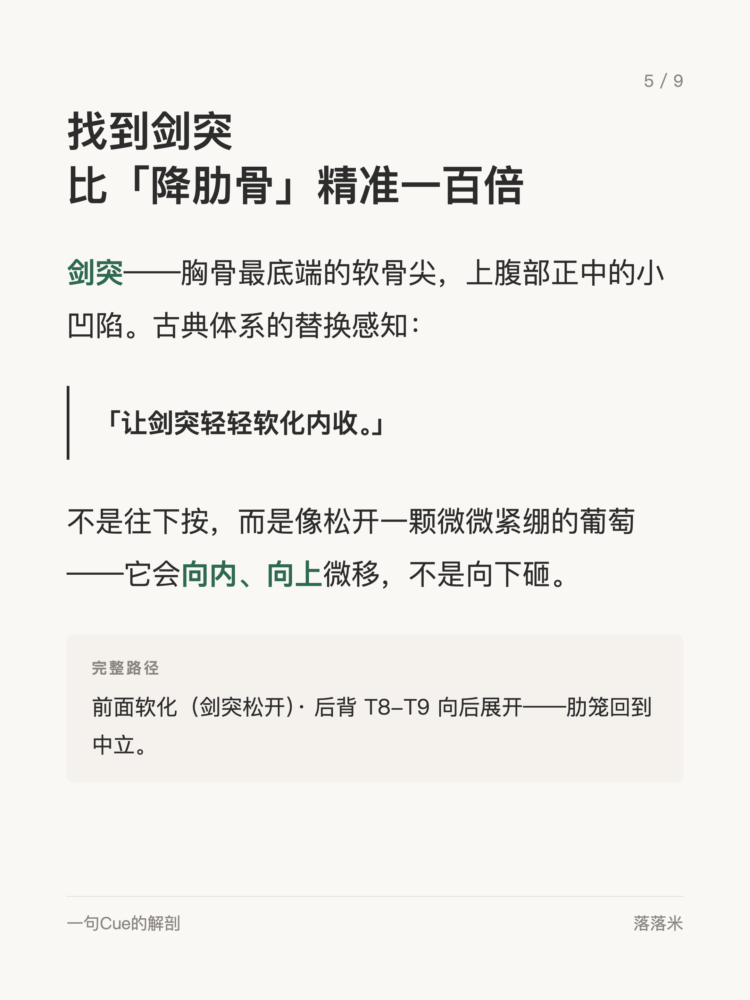
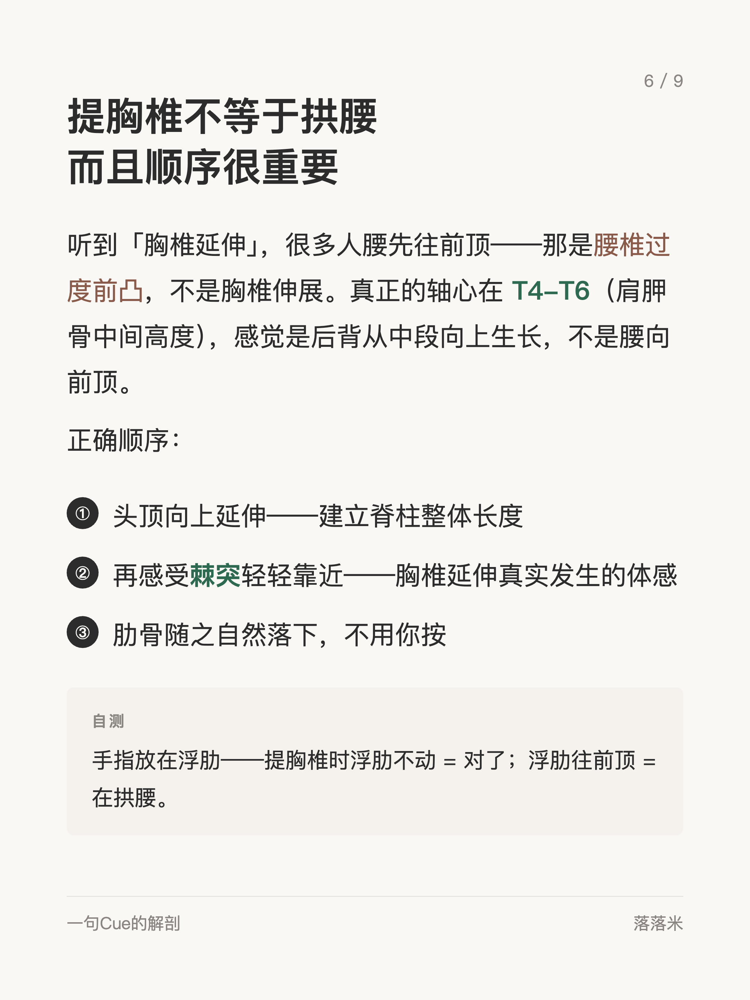
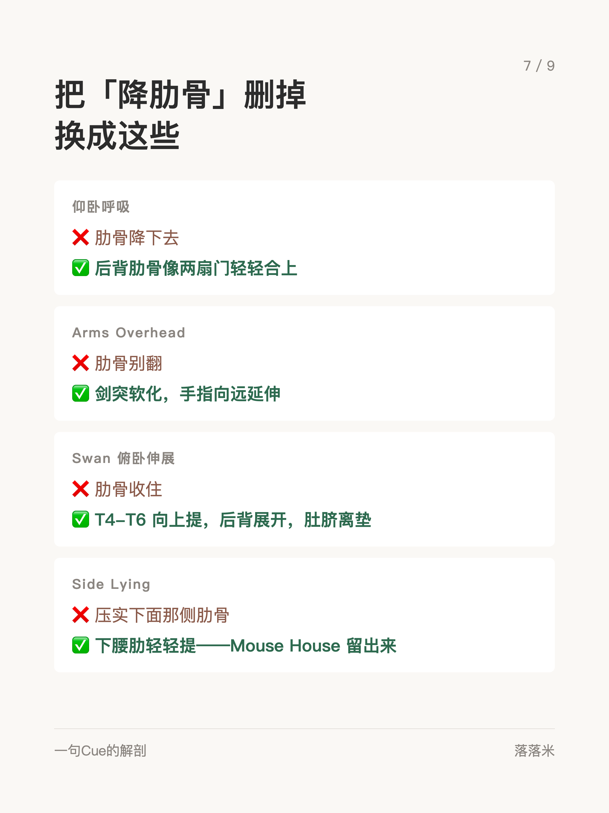
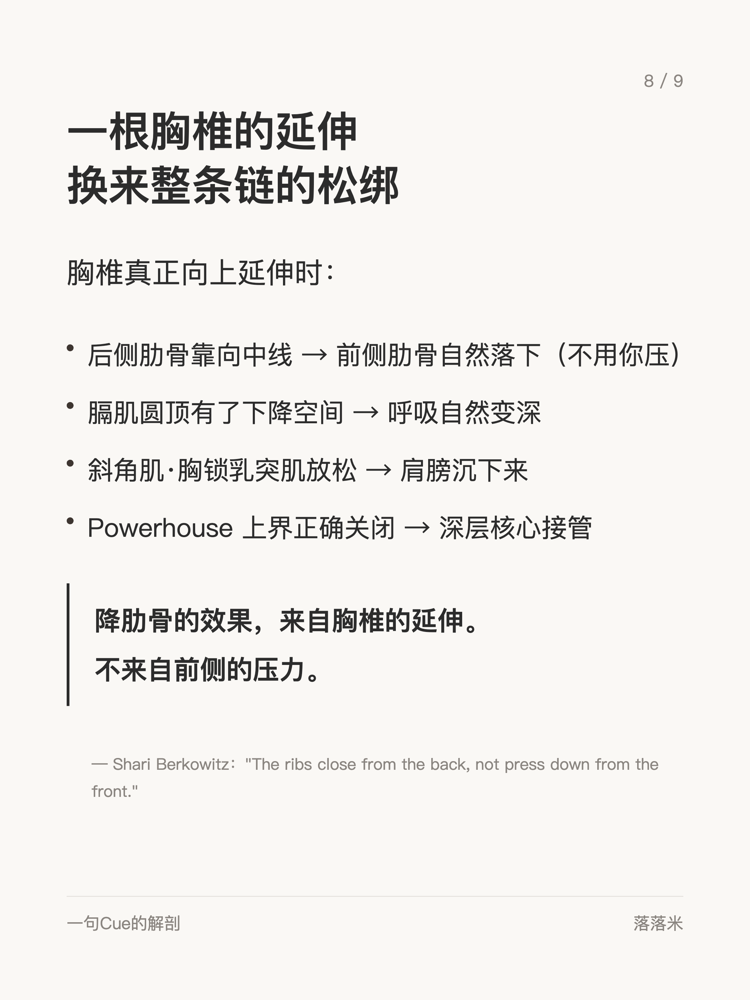

解剖学系列 #009
比降肋骨精准一百倍的感知
1 / 9

2 / 9
3 / 9

4 / 9

5 / 9

6 / 9

7 / 9

8 / 9
9 / 9
← 左右滑动浏览全部卡片 →
"降肋骨"是普拉提课上最常被喊的口令之一，但它描述的是结果，不是路径。刻意往下压肋骨时，身体常常只在做表层的"塌陷"，而不是真正的胸椎延展。
这组卡片给出一个更精准的感知替换：胸椎向天花板方向延伸——当上背部真正拉长，肋骨自然会找到它该在的位置，不需要刻意压制。这是古典体系里口令背后的解剖逻辑。